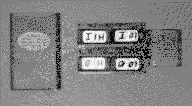

Previous
Next
TOC
Das Test- bzw. Diagnosekit von Atari
Das Testkit von Atari, beinhaltet für den jeweiligen Computer eine
Romportcartridge sowie entsprechende Steckadapter für die jeweils
vorhandenen Schnittstellen (diese sollten auch verwendet werden)!
Die anderen Testkitversionen, besitzen zum teil einen anderen Start-
bildschirm, stellvertretend für alle wird die Version 3.6 für die
ST-Computer Reihe mal durchgegangen. Die Fehlercodes weiterhinten im
Text sind in Deutsch erklärt, wobei nicht jeder Fehlercode auf jedem
Computer vorkommt, da zum beispiel der TT030 keinen MegaST Expansion
Bus hat (keine vollständigkeit, da das Testkit zum teil selber recht
ausgiebige Fehlermeldungen ausgibt!).
ST Diagnostic Test Rev. 3.6
(C) 1986, Atari Corp.
520K Ram [1]
Keyboard revision 2 [2]
60 Hz [3]
R Ram Test
O O.S.ROM
C Color
K Keyboard
M MIDI
S Serial RS232
A Audio
T Timing
D DMA Port
F Floppy Disk
P Printer/Joystick ports
H High resolution monitor
Q Run all Tests
Z Run internal tests (R,O,C,K,A,T)
E Examine/Modify memory
? Help
B Set RS232 rate
V Toggle video output--56/60 Hz
Enter letter(s) and RETURN:
Drückt man die Taste
Q werden sämtliche Tests durchgeführt. Bei
Z
nur Ram,-Rom, -Color,-Tastatur und der Timing test.
E ändert die
Hardwareregister.
B in verbindung der Cursortasten ändert die Baud-
rate für die RS232.
? oder
Helptaste bringt eine Anleitung auf den
Bildschirm und
V ändert die Frequenz auf 50 oder 60 HZ.
[1] Ramspeicher, der bei der Initialisierung gefunden wurde.
[2] Firmwareversion des Tastaturkontrollers.
[3] Bildfrequenz 50 oder 60 Hz.

weiterblättern
Kapitel Das Test- bzw. Diagnosekit von Atari, Seite 1